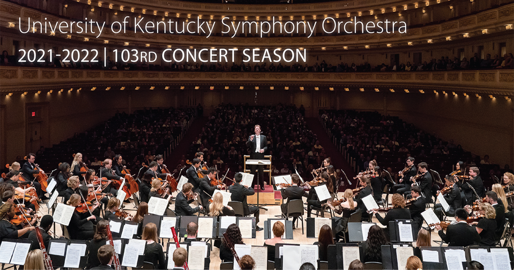

University of Kentucky Symphony Orchestra
🎻 🎻 🎻 🎻 🎻 🎻 🎻 🎻 🎻 🎻 🎻 🎻 🎻 🎻 🎻 🎻 🎻 🎻 🎻 🎻 🎻
Founded in 1918, the University of Kentucky Symphony Orchestra is a 100-member all-student orchestra presenting more than 50 concerts each year, including classical, chamber and education concerts. The group is made up of undergraduate and graduate students from across the United States, Asia, South America and Europe. The orchestra has regularly performed with world-renowned concert artists including Itzhak Perlman, Lang Lang, Sarah Chang, and Gil Shaham.
Come see UKSO at Singletary Concert Hall, October 29th, 7:30pm!
Violin 1
- Stanley Kuo (Principal)
- Reisa Fukuda
- Jurang Kim
- Andrew Lin
- Sean Radermacher
- Guillermo Arias
- Marvelous Igwe
- Brayden Hood
- Emma Browning
- Serena Hutchens
- Connor Taylor
- Nathan Jones
- Izzy Martin
- Alex Gililland
- Nicholas Castelluzzo
Violin II
- Madison Jones (Principal Second)
- JeeHee Kang
- Benjamin Lin
- Emmylou Tidwell
- Haerin Seo
- Raymond You
- Sarah Arnold
- Katherine Goble
- Alec Ramos
- Violet Newhart
- Grace Royalty
- Ian Ho
- Matthew Graviss
Viola
- Darryl Manley (Principal)
- Guanliang Zong
- Lilly Martin
- Bailey Hall
- Laney Ruth
- Anna Jeoung
- Mary Meyers
- Sidney Bibbs
- Kristin Earnest
- Aiden Koknat
- Jada Poku-Mensah
- Reese McLaughlin
- Kendra Brown
- Kylie Meadows
- Richard Smith
- Asmita Karki


Cello
- Kevin He (Principal)
- Jerram John
- Alvaro Munoz
- Issac Moorman
- Anna Watrous
- Simone Bbbs
- McKayla Weaver
- Grace Whitton
- Jackson Arnold
- Mikaela Mertz
Bass
- Benjamin Bossert (Principal)
- Tala Glass
- Elliott King
- Arsonlove Abney
- Adam Florence
- Brian Chu
- Garret Cline
Brass
- Ellen Lee (Bass Trumpet)
Follow us on Instagram, Twitter and Facebook!
An HTML page made by Aiden Koknat